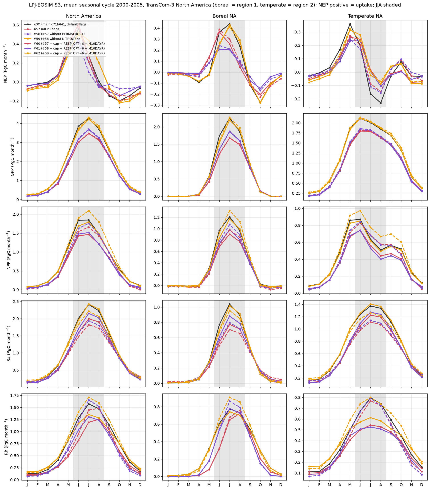
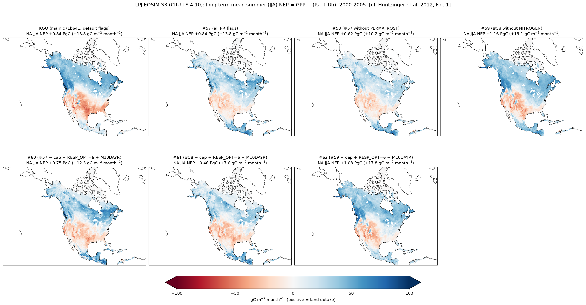
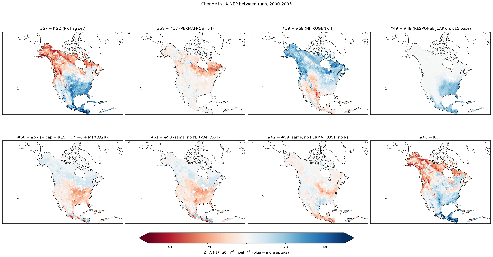
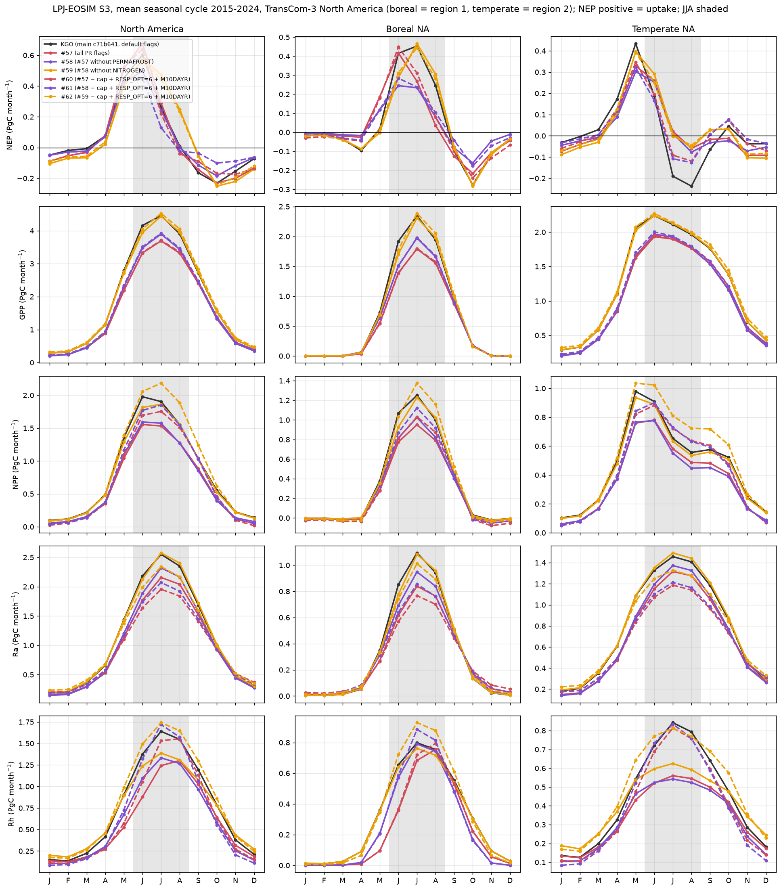
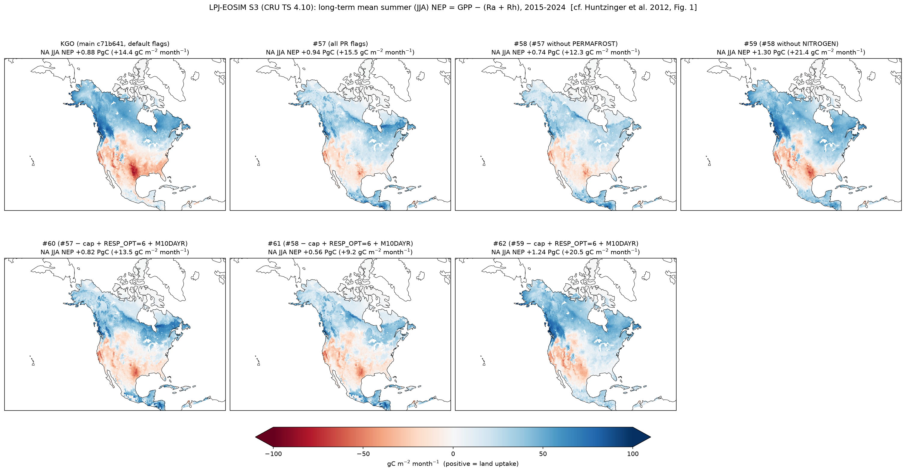
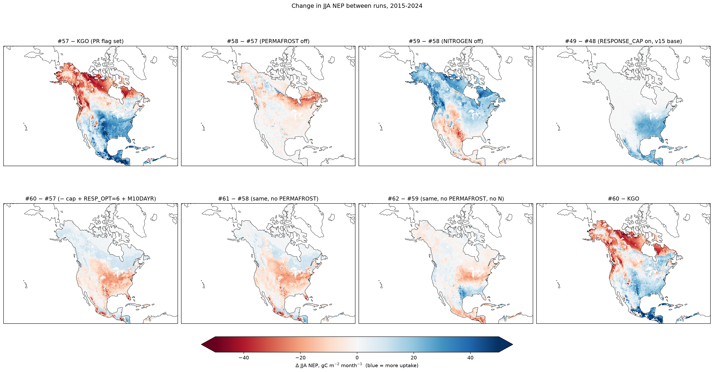

S3 runs, after Huntzinger et al. (2012) Fig. 1. NEP = NPP − Rh; positive = land uptake. 60 / 61 / 62 = 57 / 58 / 59 − RESPONSE_CAP + RESP_OPT=6 + M10DAYR (dashed, same colour as their pair).
| Temperate NA JJA NEP (PgC) | KGO | 57 | 58 | 59 | 60 | 61 | 62 |
|---|---|---|---|---|---|---|---|
| 2000–2005 | −0.20 | +0.17 | +0.13 | +0.20 | −0.03 | −0.09 | +0.14 |
| 2015–2024 | −0.24 | +0.22 | +0.19 | +0.24 | −0.02 | −0.07 | +0.21 |






Numbers: NEP table 2000–2005, NEP table 2015–2024, seasonal cycle 2000–2005, seasonal cycle 2015–2024.